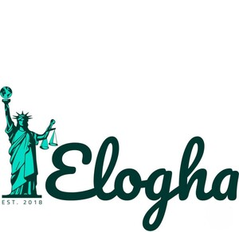

Trade Mark Journal No.2025/029 18 July 2025
UK00004228174 2 July 2025 (42)

- Class 42
- Information technology services; Information technology consulting; Information services relating to information technology; Providing information in the field of information technology; Information technology consultancy; Providing science technology information; Consultancy and information services in the field of information technology; Information technology consulting services; Information technology [IT] consultancy; Research in the field of information technology; Information technology support services; Consultancy and information services in the field of information technology architecture and infrastructure; Technical consultancy services relating to information technology; Information technology [IT] support services [troubleshooting of software]; Engineering services relating to data processing technology; Design of information systems; Research relating to technology; Provision of information relating to technological research; Providing information about the design and development of computer software; Providing online information about industrial analysis and research services; Providing information about industrial analysis and research services; Research in the field of data processing technology; Providing information in the field of computer software design; Providing technological information about environmentally-conscious and green innovations; Design services relating to the development of computerised information processing systems; Research in the field of communications technology; Providing information in the field of computer software development; Design of information systems relating to management; Consultancy and information services relating to computer software design; Provision of scientific information relating to the chemical industry.
Elogha ltd